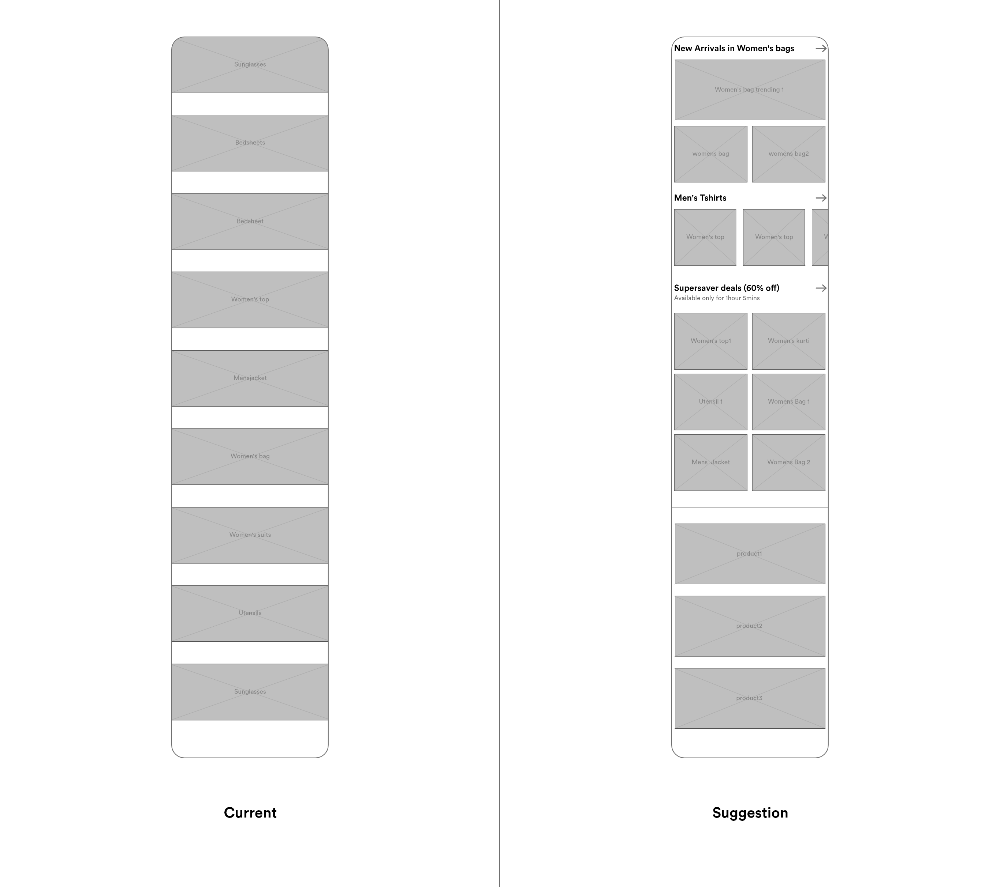

Consider the following user scenario :
No one in Sangeetha’s whatsapp group is asking for anything, so she decides to casually browse the app, not looking for anything in particular. After scrolling for a long time, she doesn’t find anything. She wishes that there was a much simpler way for her to casually browse.
Proposed solution :

Pros : Adds extra depth to the browsing experience. See much more products with fewer scrolls.
Cons : Smaller pictures might have a smaller emotional response, The viewing experience may get crowded when using grids.
A study from published in the Nielson Norman group showed there are typically 5 types of ecommerce users, one of them being the browsing customer. Browsing customers want to see what’s new, what’s popular, and what’s on sale. When shoppers come to a site on a regular basis, it’s not to see the same information that they saw the week before. It’s to see what changed. They’re interested in the latest items, the latest deals, what other people are buying. Related items and suggested products help them navigate the site, leading to new areas or new products. Top-selling products, popular products, and top-ranked products can all attract browsing shoppers.
Although the above study is for buyers and not resellers, a similar comparison can be drawn for resellers, resellers who are not looking for a particular product but for something that will spark their or their customers interest.
We’ve already optimised for the product focused user by allowing for a faster filtering process.
It is not clear showing what section will elicit a better reaction from the user. Further testing must be done to figure out what sections to be shown and how much to be shown. However, one can start by assuming that sections that show different categories like “Jewellery for women” or “Kurtis for women” or “Kitchen utensils” will be preferred for casual browsing as it allows Sangeetha to explore a wider range of categories whereas sections like “Newest Arrivals” and “Best deals” will perform better for product focused browsing as Sangeetha can focus on getting the best deal and variety for a particular product she is looking for.